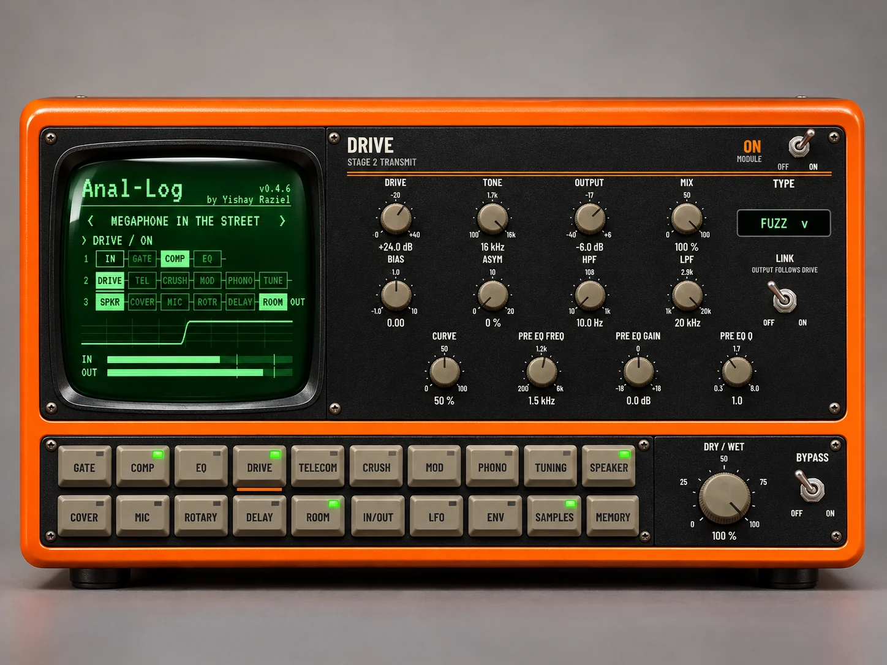
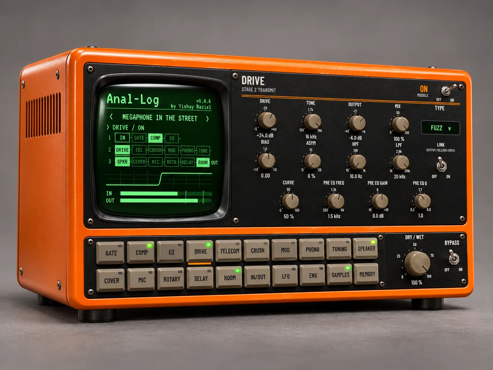
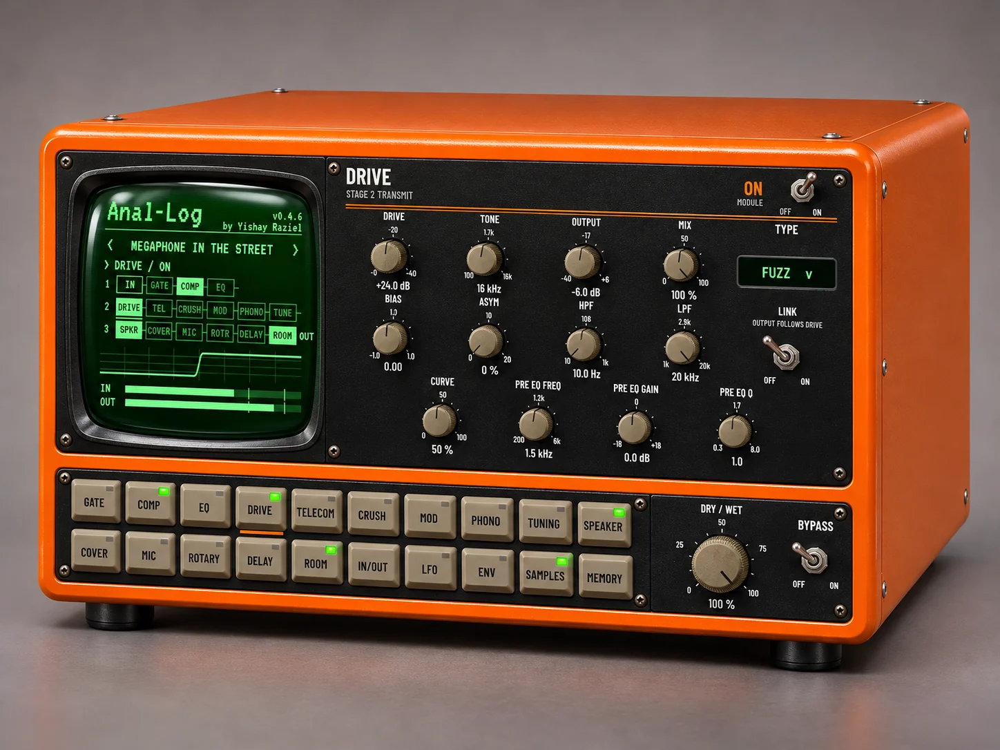

Make it sound worse.
For free.
Phones, walkie-talkies, megaphones, old radios, the TV in the next room. A speaker, phone and radio simulator for voices, music and sound design. VST3 and AU for Mac and Windows.

Gate, comp, EQ, drive, telecom, crush, mod, gramophone, radio tuning, speaker, cover, mic, rotary, delay and room, in a fixed chain.
G.711, ADPCM, GSM, three Speex rates and an LPC vocoder for robots and whispers. Real round trips at 8 kHz, with bursty packet loss.
Speakers, covers, vintage mics and 43 real rooms, from a tiled shower to a subway platform.
In six categories, all level-matched so you can flip through them without jumping on the fader.
A sample bay with street, indoor, line, machine and music beds: rain, crowds, dial tones, static.
4 LFOs and 2 envelope followers on drive, damage, filters, mic, room and output.


Open the DMG and run the installer. It's signed and notarized by Apple.
VST3 goes to /Library/Audio/Plug-Ins/VST3, AU to /Library/Audio/Plug-Ins/Components. Rescan plugins in your DAW.
Run Anal-Log_win_setup.exe. If SmartScreen warns you, click More info and then Run anyway.
VST3 goes to C:\Program Files\Common Files\VST3.
Room IRs: MIT IR Survey, James Traer and Josh H. McDermott, MIT (CC BY 4.0). BUT Speech@FIT Reverb Database, Brno University of Technology (CC BY 4.0).
Mic IRs: MicIRP and Xaudia.com, Microphone Impulse Response Project by Stewart Tavener (CC BY-SA 4.0). The modified mic IRs stay under CC BY-SA 4.0.
Speaker and room IRs: IR-Library by Conner (MIT License). Some devices use original modeled IRs.
Background sounds: CC0 recordings from noixer (Freesound) and AtomCut, plus original synthesized line sounds.
Codecs and code: JUCE, libgsm, Speex. Full list and license texts in THIRD_PARTY_NOTICES.txt, which also ships with every download.
All DSP, presets and design are original work by Yishay Raziel. Anal-Log is free and non-commercial.
Do it Anal-Log.
Download freeMac + Windows · VST3 / AU